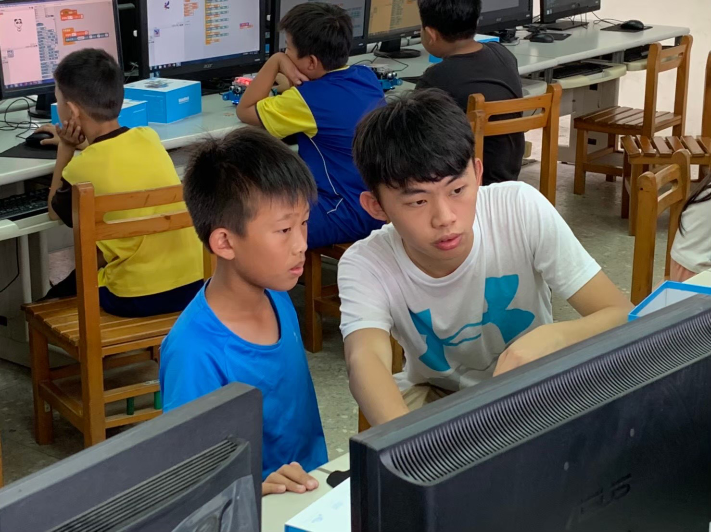

Volunteer & Outreach


Teaching Robotics in Rural Areas
Location: Lukang Township, Changhua County, Taiwan
Advisor: Prof. Chun-Fei Hsu (Tamkang University)
Sponsor: Tamkang University
Duration: Jul. 2019
- Organized robotics workshops for underprivileged students, introducing foundational concepts and sparking interest in STEM.
- Promoted equal access to technology education by bridging urban–rural resource gaps.